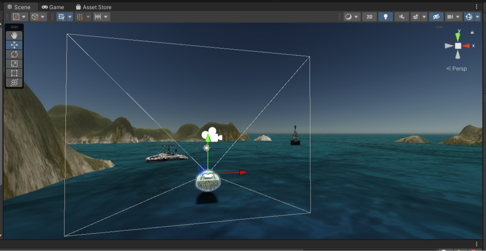
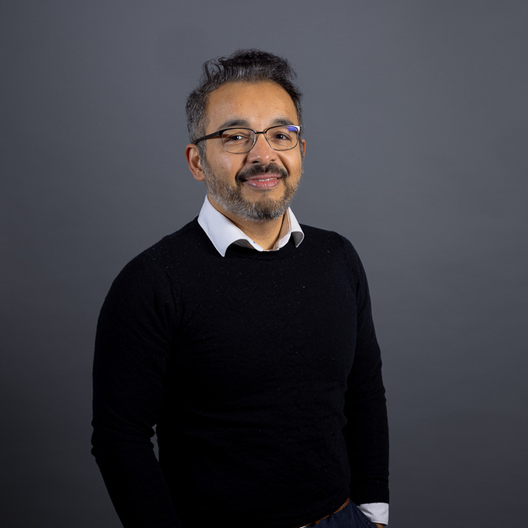
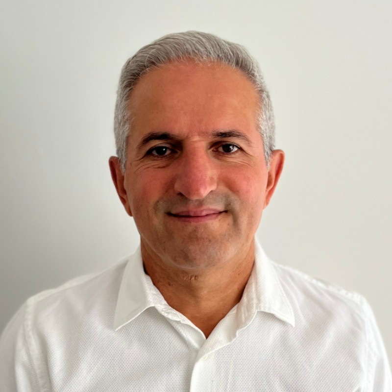
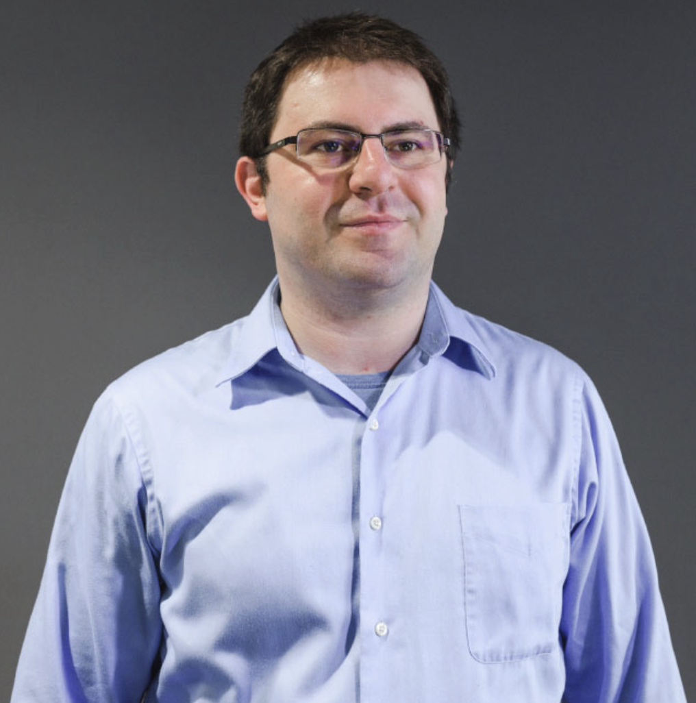
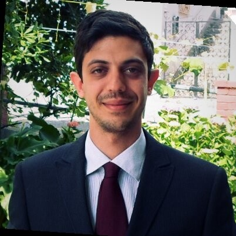

DOSITA
Data-Driven Modelling for Autonomous Marine Systems
Exploring intelligent modelling approaches for sustainable and autonomous maritime technologies.

Overview
Project Overview
DOSITA is a PhD research project focused on the exploration of data-driven modelling techniques for autonomous marine vessels. The research investigates how modern artificial intelligence approaches can support the development of intelligent and adaptive maritime systems.
The project aims to contribute to future maritime technologies by studying modelling, simulation, and data analysis approaches that can improve the understanding and operation of autonomous vessels in complex environments.
Motivation
Why This Research Matters
Autonomous maritime technologies are expected to play an important role in the future of ocean transportation, environmental monitoring, and offshore operations. At the same time, improving efficiency and sustainability within maritime systems remains a global priority.
Research into intelligent modelling and simulation tools can support the development of safer, more efficient, and more sustainable maritime technologies.

Research
Research Direction
The research investigates data-driven approaches to modelling and simulation within marine robotics environments. The project explores how artificial intelligence and modern data analysis techniques can support the development of intelligent maritime systems.
Specific technical methodologies and experimental frameworks are currently under development and will be presented through future academic publications associated with the project.
Research Outputs
Publications
Publications related to this research project will appear here as they become available.
-
Rezayan, P. (2025). MSc Dissertation. Preliminary research informing the direction of the DOSITA project.
People
Research Team
PhD Researcher
Supervisory Team

Dr. Yogang Singh
Assistant Professor
Sheffield Hallam University

Dr. Fuat Kara
Associate Professor
Sheffield Hallam University

Dr. Konstantinos Domdouzis
Assistant Professor
Sheffield Hallam University

Dr. Michele Martelli
Associate Professor
University of Genoa